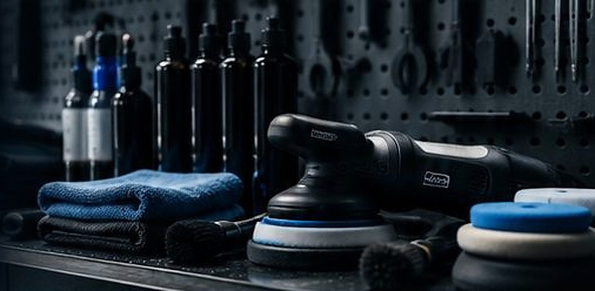

スタジオと道具
仕上がりの差は、見えるかどうかで決まります。
だから、まず見える環境を整えています。
四つの設え
特別な機械の話ではありません。
傷を見つけ、増やさないための、地味な準備です。
一台だけの作業場
作業場は、幅5.5m、奥行き8mの一区画です。壁と天井で囲い、シャッターを閉めて作業します。
床は水はけのよい塗り床で、作業のたびに洗い流します。ほこりを巻き上げないよう、研磨の日は入口を開けません。
色と角度を変えられる照明
天井に直線の照明を六本、壁に移動式の照明を四基。昼の光に近い白と、傷が浮きやすい暖かい色を切り替えます。
傷は、光の向きで見えたり消えたりします。作業の途中で何度も照明を動かし、同じ面を別の角度から確かめます。
純水の設備
水道水には、乾くと白く残る成分が含まれています。最後のすすぎには、ろ過してその成分を除いた水を使います。
フィルターは水質を測って交換しています。交換の日は半日お休みをいただくことがあり、お知らせでご案内します。
部位で分けたクロス
塗装、ガラス、ホイール、内装で、色の違うクロスを使い分けます。ホイールに使ったものが塗装に触れることはありません。
一度床に落としたクロスは、その日は使いません。洗濯は部位ごとに分け、柔軟剤は使いません。
道具の棚
使う道具は多くありません。
置き場所を決め、使ったら洗って戻します。

- 研磨機回転の仕方が違う二種類。面の広さと傷の深さで持ち替えます。
- パッド硬さの違う三段階。一台で十枚ほど使い、目詰まりしたら替えます。
- 膜厚計塗装の厚みを測る道具です。研磨の前に各面を測り、薄い場所を把握します。
- 筆とブラシエンブレム、吹き出し口、ホイールのナット穴。毛の硬さで使い分けます。
- 洗剤とコーティング剤遮光のボトルに小分けし、開けた日を書いて管理します。
なぜ、一台ずつなのか
- 隣の作業が届かない洗車の水しぶきや研磨の粉は、思ったより遠くまで飛びます。同時に二台を入れると、仕上げた面に載ってしまいます。
- 照明を自由に動かせる車のまわりを空けておくことで、どの面にも照明を回せます。
- 硬化の時間を守れるコーティングのあとは、動かさずに一晩置きます。次の車のために外へ出すことはしません。
- そのぶん、予約は限られますお受けできるのは、洗車で一日二台、コーティングで週に二、三台です。お待たせすることがあります。
所在地と営業時間
完全予約制です。ご来店の前に、必ずご連絡ください。
- 所在地
- 東京都○○区○○ 1-2-3
- 最寄り
- ○○線 ○○駅 南口から徒歩9分
- お車で
- ○○通り「○○二丁目」交差点から南へ200m。入口は通りに面した銀色のシャッターです。
- 待機場所
- 敷地内に一台分。ご予約の時刻より早く着いた場合にお使いください。
| 曜日 | 時間 | お持ち込み |
|---|---|---|
| 月・火 | 10:00〜19:00 | 10:00 / 14:00 |
| 水 | 定休日 | — |
| 木・金 | 10:00〜19:00 | 10:00 / 14:00 |
| 土・日・祝 | 10:00〜19:00 | 10:00 のみ |
最終のお引き渡しは 18:30 です。祝日が水曜にあたる場合はお休みします。臨時の休業はホームのお知らせでご案内します。
まず、お車を見せてください
内容が決まっていなくてもかまいません。
状態を拝見してから、必要な作業だけをご提案します。
お電話でも承ります
03-0000-0000
10:00〜19:00｜水曜定休｜完全予約制